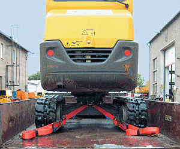

Weitere Informationen zum Thema Ladungssicherung:
Ladungssicherung auf Fahrzeugen der Bauwirtschaft
Mehrtägige Seminare zur Ladungssicherung finden Sie in der Seminardatenbank der BG BAU. Über den Stand der Technik bei der Ladungssicherung können Sie sich auch in einstündigen Online-Terminen informieren
Auch in den Fahrsicherheitstrainings für Transporter werden Grundlagen der Ladungssicherung vermittelt.